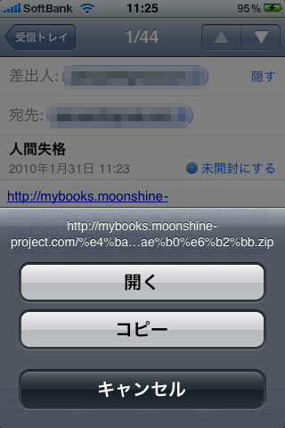
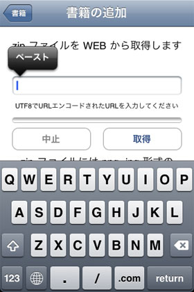
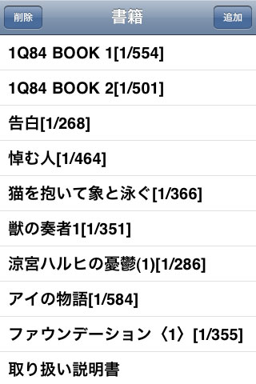
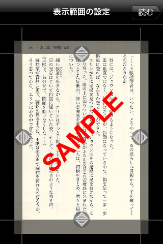
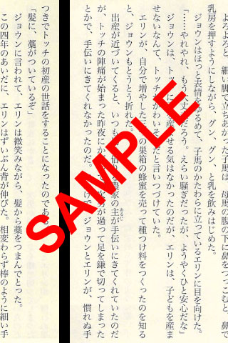

はじめに
「吾輩の小説」は自前でスキャニングした小説などを快適に楽しむためのアプリケーションです。
小説を楽しむには
1 : JPEG,PNG 画像を ZIP にする
2 : ZIP を WEB に置く
3 : URL をメールで iPhone に送る
4 : URL をアプリでダウンロード
という手順になります。
また、この「取り扱い説明書」では、書籍の断裁、スキャニング、iPhoneへのデータ取り込みなど、「吾輩の小説」を楽しむ為の総合的な説明を行います。
目次
・本の断裁
・本のスキャニング
・iPhoneへの取り込み
・「吾輩の小説」の使い方
本の断裁
本を効率的かつ綺麗にスキャニングするには、本の背表紙を切り落としバラバラにする断裁という作業が必要です。本を断裁する３つの方法を紹介します。
１：断裁機を使用する
自前でもっとも素早く綺麗に断裁できる方法です。1冊の断裁に30秒もかからないでしょう。断裁機は Amazon では以下のものが購入可能です。
２：カッターで切る
自前でもっとも安く断裁できる方法です。しかし、1冊の断裁に5分程度かかり、まっすぐ切れなかった場合にはスキャニング時に傾いた画像になってしまいますので、慎重に行う必要があります。
文庫本を断裁する時は、カバーを外して背表紙の端から 3ミリ 程度の所を何回も刃を入れて切ります。ハードカバーの場合は、まず固い表紙と裏表紙を紙との間にカッターの刃を入れて外し、その後文庫本同様に背表紙の端から 3ミリ 程度の所を何回も刃を入れて切ります。
３：業者に頼む
1冊100円程度で綺麗に断裁できる方法です。キンコーズでは持ち込んだ書籍を断裁してくれます。また、scanbooks.jpでは郵送した書籍を裁断して返送してくれます。
本のスキャニング
スキャニングは複数の用紙を連続して取り込めると効率的に行う事ができます。そこで、富士通の ScanSnap S1500 もしくは ScanSnap S1300 がおすすめです。1冊350ページ程の本なら15分程度でスキャニングが可能です。
スキャニングしたデータは、PDF 形式か JPEG 形式での保存が可能ですが、「吾輩の小説」では JPEG,PNG 形式のみ使用可能ですので、JPEG 形式で、ページ順に連番を付けたファイル名で保存をします。そして、ページ枚数分の JPEG 形式のファイルを ZIP 形式で1つのファイルにまとめます。
iPhoneへの取り込み
「吾輩の小説」では、以下の手順でiPhoneに書籍データを入れる事が可能です
１：ZIP ファイルを WEB にアップし、URL でアクセス可能な状態にします
２：UTF-8 にて URL エンコード済みの URL をメールで iPhone のメールアドレスに送信します。URL エンコードとは URL に含まれる日本語などの文字を %00 などの文字に置き換えたものです。通常は URL をブラウザ表示させ、リンクをコピーする事で取得ができますが、できない場合はこちらで変換してみてください。
３：iPhoneでメールを受信し、メールに書かれた URL を長押ししてコピーします

４：「吾輩の小説」を起動し「書籍の追加」画面の URL の入力欄を長押ししてペーストして取得します

「吾輩の小説」の使い方
「吾輩の小説」は小説を読む事に集中できる事をコンセプトにしているため非常にシンプルな操作のみで使用できます。以下の手順で小説を読めます。
１：取り込み済みの書籍を選択します。

２：表示範囲を設定します。上下の設定をしっかりと行うと文章が見やすくなります。左右はページの裏表によって文字の位置が大きく異なるので、余裕をもって設定します。

３：画面を指で左右にスライドさせるとページの移動ができます。

それでは iPhone で小説をお楽しみください。